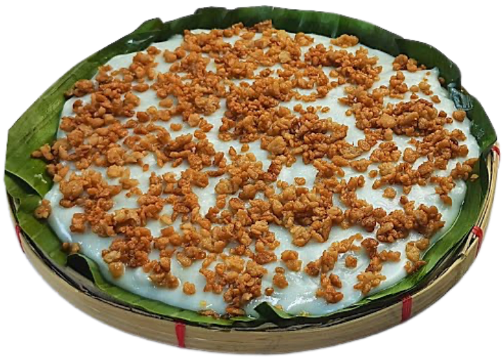

Tibok Tibok
If you’ve ever had Maja Blanca, imagine its luxurious, velvet-smooth Kapampangan cousin. That’s Tibok-Tibok. The name literally translates to "heartbeat," derived from the subtle, gentle bubbling of the milk as it slowly thickens on the stove, resembling a soft pulse. Unlike standard coconut milk puddings, authentic Tibok-Tibok is built almost entirely on fresh carabao’s milk (gatas ng damulag). Because water buffalo milk has nearly twice the butterfat of cow's milk, it yields a lush, melt-in-your-mouth texture with a delicate, slightly tangy richness. Infused with a hint of citrus from dayap (local lime) peel and topped with crispy, toasted latik (coconut curds), it is pure and a true testament to the simple magic found in our native kitchen.

Ingredients
- Fresh Carabao's Milk (Substitute: Full Cream Cow's Milk): 4 cups
- Cornstarch: 1/2 cup
- White Sugar: 3/4 cups (adjust to preferred sweetness)
- Dayap (Substitute: Lime Zest): 1 strip
- Fine Salt: 1 pinch
- Fresh Coconut Cream (For Latik): 2 cups, simmered down to yield golden latik curds and coconut oil for greasing
- Cooking Oil